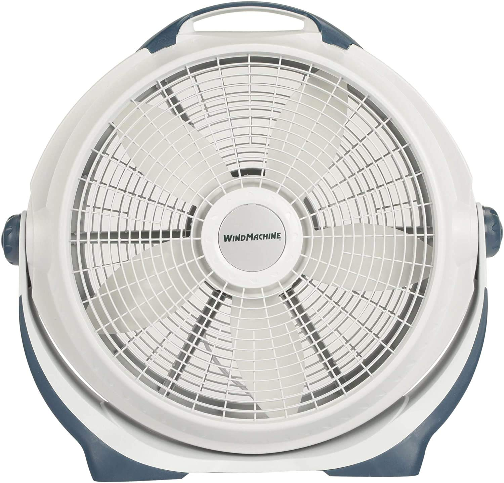

Dyson Air Multiplier
Discription
The Dyson Air Multiplier is a bladeless fan that uses Air Multiplier technology to create a powerful, uninterrupted stream of airflow. It's sleek, quiet, and safe, making it a stylish addition to any room./p>
Honeywell QuietSet
Discription
The Honeywell QuietSet fan offers five different speed settings and a remote control for convenience. With its quiet operation, it's perfect for bedrooms and offices, providing a cool and peaceful environment.
Lasko Wind Machine

Discription
The Lasko Wind Machine is a high-velocity floor fan designed to circulate air effectively. Its pivoting head and durable construction make it ideal for cooling larger spaces.
Vornado 660
Discription
The Vornado 660 is a whole room air circulator that can distribute air up to 100 feet. It features adjustable airflow and a unique Vortex Action to keep your space comfortable.
Holmes Box Fan
Discription
The Holmes Box Fan is a classic and affordable option for staying cool. Its compact design is perfect for window placement, and it comes with multiple speed settings.
Rowenta VU2531 Turbo Silence
Discription
The Rowenta Turbo Silence fan lives up to its name with incredibly quiet operation and powerful cooling. It offers multiple speed options and an adjustable height.
Panasonic WhisperCeiling Bathroom Fan
Discription
The Panasonic WhisperCeiling fan is specifically designed for bathroom use. It's ultra-quiet and helps reduce humidity and odors, improving indoor air quality.
Tower Bladeless Fan
Discription
The Tower Bladeless Fan combines modern design with bladeless technology for a safe and stylish cooling solution. It's easy to clean and adds a touch of elegance to any room.
Westinghouse Great Falls Ceiling Fan

Discription
The Westinghouse Great Falls Ceiling Fan is perfect for both indoor and outdoor use. It combines a rustic look with high-quality performance to keep your living spaces comfortable.
Black+Decker Mini Desk Fan
.jpg)
Discription
The Philips Hue White and Color Ambiance LED Bulb allows you to transform your living space with a spectrum of over 16 million colors. It's compatible with smart home systems, and you can control it remotely through your smartphone, set schedules, and create the perfect lighting ambiance for any occasion.
Havells ceiling fan with light

Discription
The Dyson Air Multiplier is a bladeless fan that uses Air Multiplier technology to create a powerful, uninterrupted stream of airflow. It's sleek, quiet, and safe, making it a stylish addition to any room.
Havells Underlight Ceiling Fan
Discription
The Dyson Air Multiplier is a bladeless fan that uses Air Multiplier technology to create a powerful, uninterrupted stream of airflow. It's sleek, quiet, and safe, making it a stylish addition to any room.